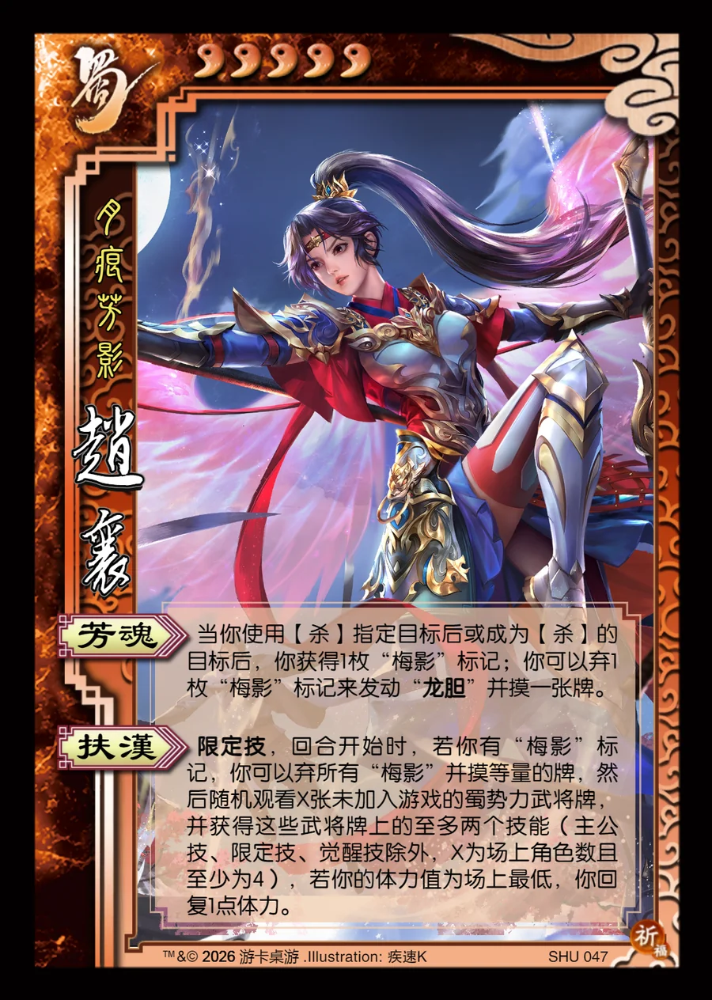

点击卡面查看大图
蜀
赵襄
♥5月痕芳影
芳魂
当你使用【杀】指定目标后或成为【杀】的目标后，你获得1枚“梅影”标记；你可以弃1枚“梅影”标记来发动“龙胆”并摸一张牌。
扶汉限定技
限定技，回合开始时，若你有“梅影”标记，你可以弃所有“梅影”并摸等量的牌，然后随机观看X张未加入游戏的蜀势力武将牌，并获得这些武将牌上的至多两个技能（主公技、限定技、觉醒技除外，X为场上角色数且至少为4），若你的体力值为场上最低，你回复1点体力。